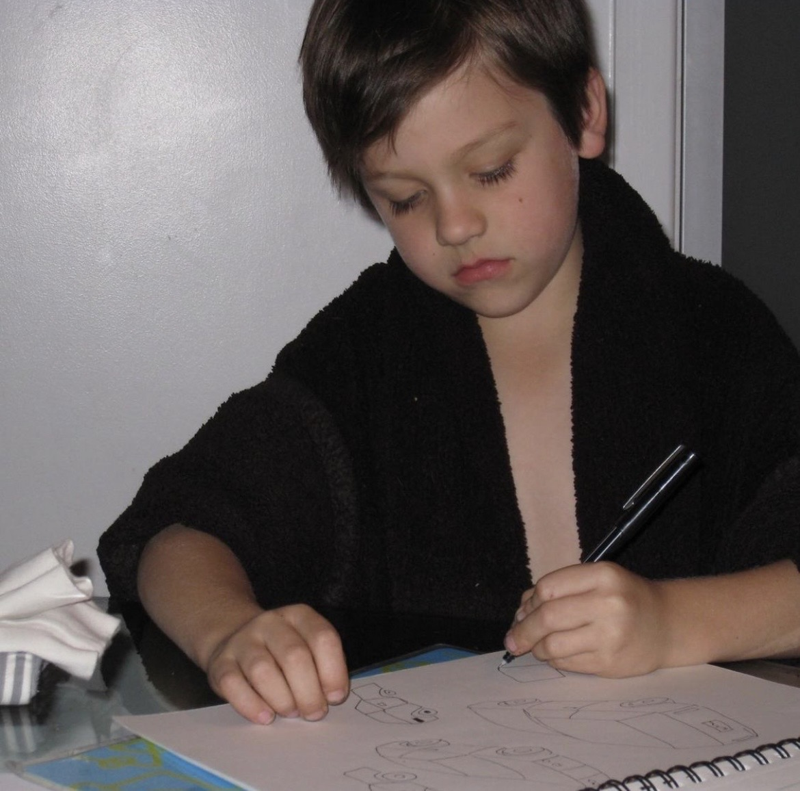

About
I began designing jewelry in the 8th grade, carving my first pieces from wax. Since then, it has been a consistent thread in my life — custom rings and pendants for clients and brands.
In a saturated space, my goal is jewelry that feels both unique and approachable.
asherdelman@gmail.com
323-823-7888